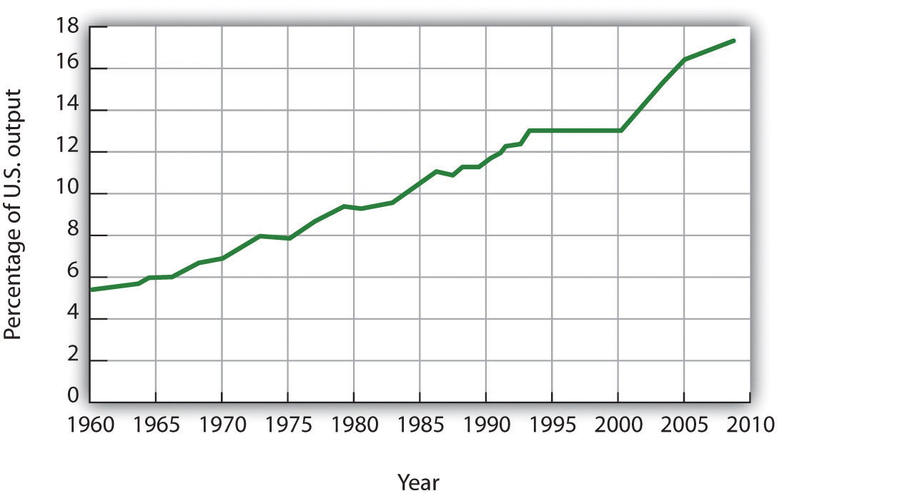
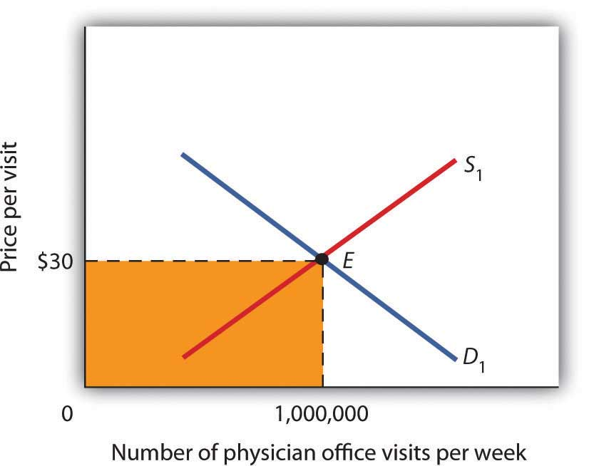
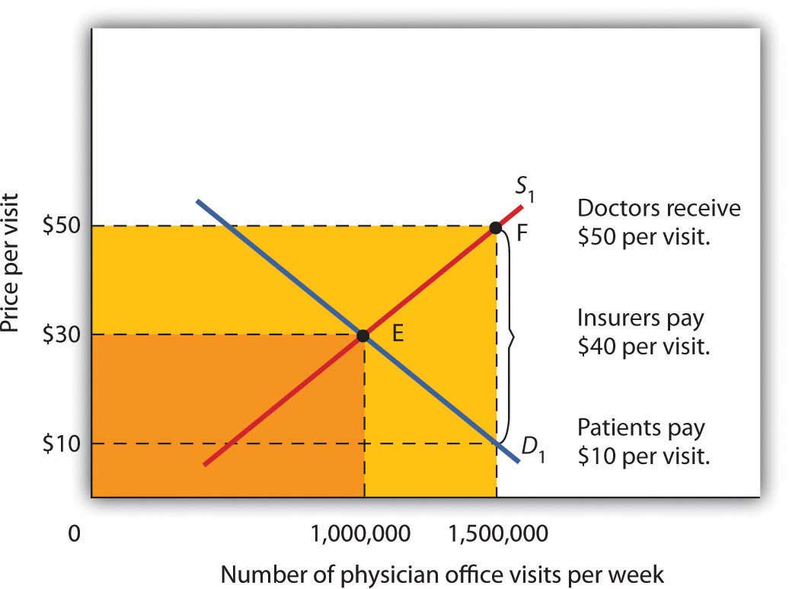

There has been much discussion over the past three decades about the health-care problem in the United States. Much of this discussion has focused on rising spending for health care. In this section, we will apply the model of demand and supply to health care to see what we can learn about some of the reasons behind rising spending in this important sector of the economy.
Figure 4.10 "Health-Care Spending as a Percentage of U.S. Output, 1960–2009" shows the share of U.S. output devoted to health care since 1960. In 1960, about 5% of total output was devoted to health care; by 2009 this share had risen to 17.6%. That means that we are devoting more of our spending to health care and less to other goods and services.
The Affordable Care Act of 2010 dramatically impacted health care services. Among its provisions is a requirement that individuals purchase health insurance (the so-called individual mandate). That provision may well result in the entire Act being ruled unconstitutional by the courts. As this book went to press, the Act was pending before the court system, and a ruling against it, or at least against parts of it, seemed possible.
The Act requires insurance companies to provide coverage for children on their parent’s policies up to the age of 26. It also bars health insurance companies from denying coverage based on pre-existing conditions.
Provisions of the Act are extensive. It applies to virtually every aspect of health care services. It allows people to acquire health care insurance regardless of pre-existing conditions. It also allows employers to opt out of providing health insurance and to pay a fee instead.
Figure 4.10 Health-Care Spending as a Percentage of U.S. Output, 1960–2009
Health care’s share of total U.S. output rose from about 5% in 1960 to 17.6% in 2009.
Data for period 1960–1992 from Health Care Finance Association (which was the predecessor to the Centers for Medicare and Medicaid Services); Data for period 1993–2009 from Centers for Medicare and Medicaid Services, Office of the Actuary: National Health Statistics Group https://www.cms.gov/NationalHealthExpendData/downloads/tables.pdf.
Why were Americans willing to increase their spending on health care so dramatically? The model of demand and supply gives us part of the answer. As we apply the model to this problem, we will also gain a better understanding of the role of prices in a market economy.
Figure 4.11 Total Spending for Physician Office Visits
Total spending on physician office visits is $30 per visit multiplied by 1,000,000 visits per week, which equals $30,000,000. It is the shaded area bounded by price and quantity.
When we speak of “health care,” we are speaking of the entire health-care industry. This industry produces services ranging from heart transplant operations to therapeutic massages; it produces goods ranging from X-ray machines to aspirin tablets. Clearly each of these goods and services is exchanged in a particular market. To assess the market forces affecting health care, we will focus first on just one of these markets: the market for physician office visits. When you go to the doctor, you are part of the demand for these visits. Your doctor, by seeing you, is part of the supply.
Figure 4.11 "Total Spending for Physician Office Visits" shows the market, assuming that it operates in a fashion similar to other markets. The demand curve D1 and the supply curve S1 intersect at point E, with an equilibrium price of $30 per office visit. The equilibrium quantity of office visits per week is 1,000,000.
We can use the demand and supply graph to show total spending, which equals the price per unit (in this case, $30 per visit) times the quantity consumed (in this case, 1,000,000 visits per week). Total spending for physician office visits thus equals $30,000,000 per week ($30 times 1,000,000 visits). We show total spending as the area of a rectangle bounded by the price and the quantity. It is the shaded region in Figure 4.11 "Total Spending for Physician Office Visits".
The picture in Figure 4.11 "Total Spending for Physician Office Visits" misses a crucial feature of the market. Most people in the United States have health insurance, provided either by private firms, by private purchases, or by the government. With health insurance, people agree to pay a fixed amount to the insurer in exchange for the insurer’s agreement to pay for most of the health-care expenses they incur. While insurance plans differ in their specific provisions, let us suppose that all individuals have plans that require them to pay $10 for an office visit; the insurance company will pay the rest.
How will this insurance affect the market for physician office visits? If it costs only $10 for a visit instead of $30, people will visit their doctors more often. The quantity of office visits demanded will increase. In Figure 4.12 "Total Spending for Physician Office Visits Covered by Insurance", this is shown as a movement along the demand curve. Think about your own choices. When you get a cold, do you go to the doctor? Probably not, if it is a minor cold. But if you feel like you are dying, or wish you were, you probably head for the doctor. Clearly, there are lots of colds in between these two extremes. Whether you drag yourself to the doctor will depend on the severity of your cold and what you will pay for a visit. At a lower price, you are more likely to go to the doctor; at a higher price, you are less likely to go.
In the case shown, the quantity of office visits rises to 1,500,000 per week. But that suggests a potential problem. The quantity of visits supplied at a price of $30 per visit was 1,000,000. According to supply curve S1, it will take a price of $50 per visit to increase the quantity supplied to 1,500,000 visits (Point F on S1). But consumers—patients—pay only $10.
Insurers make up the difference between the fees doctors receive and the price patients pay. In our example, insurers pay $40 per visit of insured patients to supplement the $10 that patients pay. When an agent other than the seller or the buyer pays part of the price of a good or service, we say that the agent is a third-party payerAn agent other than the seller or the buyer who pays part of the price of a good or service..
Notice how the presence of a third-party payer affects total spending on office visits. When people paid for their own visits, and the price equaled $30 per visit, total spending equaled $30 million per week. Now doctors receive $50 per visit and provide 1,500,000 visits per week. Total spending has risen to $75 million per week ($50 times 1,500,000 visits, shown by the darkly shaded region plus the lightly shaded region).
Figure 4.12 Total Spending for Physician Office Visits Covered by Insurance
With insurance, the quantity of physician office visits demanded rises to 1,500,000. The supply curve shows that it takes a price of $50 per visit to increase the quantity supplied to 1,500,000 visits. Patients pay $10 per visit and insurance pays $40 per visit. Total spending rises to $75,000,000 per week, shown by the darkly shaded region plus the lightly shaded region.
The response described in Figure 4.12 "Total Spending for Physician Office Visits Covered by Insurance" holds for many different types of goods and services covered by insurance or otherwise paid for by third-party payers. For example, the availability of scholarships and subsidized tuition at public and private universities increases the quantity of education demanded and the total expenditures on higher education. In markets with third-party payers, an equilibrium is achieved, but it is not at the intersection of the demand and supply curves. The effect of third-party payers is to decrease the price that consumers directly pay for the goods and services they consume and to increase the price that suppliers receive. Consumers use more than they would in the absence of third-party payers, and providers are encouraged to supply more than they otherwise would. The result is increased total spending.
The provision of university education through taxpayer-supported state universities is another example of a market with a third-party payer. Use the model of demand and supply to discuss the impact this has on the higher education market. Specifically, draw a graph similar to Figure 4.12 "Total Spending for Physician Office Visits Covered by Insurance". How would you label the axes? Show the equilibrium price and quantity in the absence of a third-party payer and indicate total spending on education. Now show the impact of lower tuition As a result of state support for education. How much education do students demand at the lower tuition? How much tuition must educational institutions receive to produce that much education? How much spending on education will occur? Compare total spending before and after a third-party payer enters this market.
The health-care industry presents us with a dilemma. Clearly, it makes sense for people to have health insurance. Just as clearly, health insurance generates a substantial increase in spending for health care. If that spending is to be limited, some mechanism must be chosen to do it. One mechanism would be to require patients to pay a larger share of their own health-care consumption directly, reducing the payments made by third-party payers. Allowing people to accumulate tax-free private medical savings accounts is one way to do this. Another option is to continue the current trend to use insurance companies as the agents that limit spending. A third option is government regulation; this Case in Point describes how the state of Oregon tried to limit health-care spending by essentially refusing to be a third-party payer for certain services.
Like all other states, Oregon has wrestled with the problem of soaring Medicaid costs. Its solution to the problem illustrates some of the choices society might make in seeking to reduce health-care costs.
Oregon used to have a plan similar to plans in many other states. Households whose incomes were lower than 50% of the poverty line qualified for Medicaid. In 1987, the state began an effort to manage its Medicaid costs. It decided that it would no longer fund organ transplants and that it would use the money saved to give better care to pregnant women. The decision turned out to be a painful one; the first year, a seven-year-old boy with leukemia, who might have been saved with a bone marrow transplant, died. But state officials argued that the shift of expenditures to pregnant women would ultimately save more lives.
The state gradually expanded its concept of determining what services to fund and what services not to fund. It collapsed a list of 10,000 different diagnoses that had been submitted to its Medicaid program in the past into a list of more than 700 condition-treatment pairs. One such pair, for example, is appendicitis-appendectomy. Health-care officials then ranked these pairs in order of priority. The rankings were based on such factors as the seriousness of a particular condition and the cost and efficacy of treatments. The state announced that it would provide Medicaid to all households below the poverty line, but that it would not fund any procedure ranked below a certain level, initially number 588 on its list. The plan also set a budget limit for any one year; if spending rose above that limit, the legislature must appropriate additional money or drop additional procedures from the list of those covered by the plan. The Oregon Health Plan officially began operation in 1994.
While the Oregon plan has been applied only to households below the poverty line that are not covered by other programs, it suggests a means of reducing health-care spending. Clearly, if part of the health-care problem is excessive provision of services, a system designed to cut services must determine what treatments not to fund.
Professors Jonathan Oberlander, Theodore Marmor, and Lawrence Jacobs studied the impact of this plan in practice through the year 2000 and found that, in contrast to initial expectations, excluded procedures were generally ones of marginal medical value, so the “line in the sand” had little practical significance. In addition, they found that patients were often able to receive supposedly excluded services when physicians, for example, treated an uncovered illness in conjunction with a covered one. During the period of the study, the number of people covered by the plan expanded substantially and yet rationing of services essentially did not occur. How do they explain this seeming contradiction? Quite simply: state government increased revenues from various sources to support the plan. Indeed, they argue that, because treatments that might not be included were explicitly stated, political pressure made excluding them even more difficult and may have inadvertently increased the cost of the program.
In the early 2000s, Oregon, like many other states, confronted severe budgetary pressures. To limit spending, it chose the perhaps less visible strategy of reducing the number of people covered through the plan. Once serving more than 100,000 people, budget cuts reduced the number served to about 17,000. Whereas in 1996, 11% of Oregonians lacked health insurance, in 2008 16% did.
Trailblazing again, in 2008 Oregon realized that its budget allowed room for coverage for a few thousand additional people. But how to choose among the 130,000 eligibles? The solution: to hold a lottery. More than 90,000 people queued up, hoping to be lucky winners.
Sources: Jonathan Oberlander, Theodore Marmor, and Lawrence Jacobs, “Rationing Medical Care: Rhetoric and Reality in the Oregon Health Plan,” Canadian Medical Association Journal 164: 11 (May 29, 2001): 1583–1587; William Yardley, “Drawing Lots for Health Care,” The New York Times, March 13, 2008: p. A12.
Without a third-party payer for education, the graph shows equilibrium tuition of P1 and equilibrium quantity of education of Q1. State support for education lowers tuition that students pay to P2. As a result, students demand Q2 courses per year. To provide that amount of education, educational institutions require tuition per course of P3. Without a third-party payer, spending on education is 0P1EQ1. With a third-party payer, spending rises to 0P3FQ2.